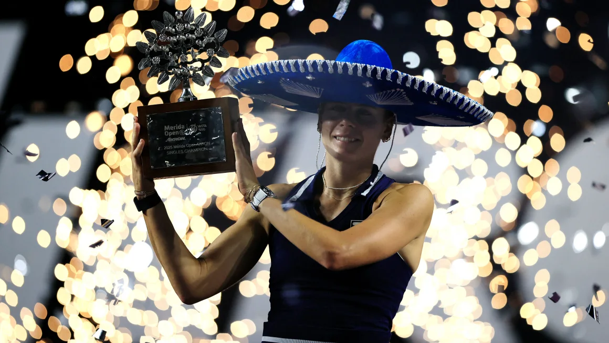

US tennis star Emma Navarro joins exclusive club after winning flawless final 6-0, 6-0

American tennis star Emma Navarro produced a flawless performance in the WTA 500 Mérida Open Akron final on Sunday, beating Colombian qualifier Emiliana Arango 6-0, 6-0.
It took just 55-minutes for Navarro to wrap up the match against her exhausted opponent, who is likely to break into the world top 100 after her best run at a WTA tournament.
Such a perfect display is so rare that Navarro has become just the fifth player since 2000 to win a WTA final without losing a game – the last time it happened was in 2021, when Iga Świątek beat Karolína Plíšková in Rome, Italy.
The win in Mexico is Navarro’s second title of her career and capped off an impressive tournament in which she didn’t drop a single set.
“I’m pretty excited. The vibes are really good around here,” the 23-year-old said in an Instagram video posted by the WTA after the final.
Navarro, the daughter of a billionaire, has been cementing herself as a serious contender on tour for the last couple of years and is now the world No. 10 – the American is also her nation’s 4th highest ranked female player.
Navarro’s rise, though, should come as no surprise after she enjoyed a successful college career at Virginia, becoming the 2021 NCAA champion in her freshman year – a result which then qualified her for the US Open main draw, where she lost in the first round.
She decided to turn her full attention to professional tennis in 2022 and reached the US Open semifinal last year. She also reached the quarterfinals of last year’s Wimbledon and this year’s Australian Open.
Ally Sentnor scores stunning goal as USWNT beats Colombia 2-0 in SheBelieves Cup opener
Ally Sentnor scored a brilliant long-range goal as the US Women’s National Team (USWNT) got its SheBelieves Cup campaign underway with a 2-0 win against Colombia on Thursday.
Sentnor’s second-half strike doubled the US’ lead after Catarina Macario finished off a fine team goal to open the scoring in the 33rd minute.
Speaking after the match, Sentnor said she was “over the moon” to score her first international goal – and in some style too.
The 21-year-old picked the ball up in space before driving towards goal and sending a swerving shot into the back of the net.
Sentnor, who last year was voted US Young Female Player of the Year, then ran to the sidelines to celebrate with the rest of the team.
“It means the world,” Sentnor added, per the Associated Press. “I am playing beside people I’ve grown up idolizing and watching on the field, so being out here playing is a full circle moment.”
The win stretches the USWNT’s unbeaten streak to 21 matches – it last tasted defeat against Mexico in February last year.
Emma Hayes’s side is also bidding to win a sixth consecutive SheBelieves Cup after dominating the invitational competition in recent years.
It was also a night to remember for the other goalscorer, Macario.
Radcliffe runs first marathon in 10 years aged 51
Former world record holder Paula Radcliffe ran her first competitive marathon in a decade on Sunday in Tokyo.
Radcliffe, 51, finished in a time of two hours, 57 minutes and 26 seconds - 10 years after ending her glittering athletics career at the 2015 London Marathon.
The Briton held the world record for 16 years from 2003 with a time of 2:15:25 before it was broken by Kenya's Brigid Kosgei in 2019.
And her former record was still faster than that recorded by Sunday's winner, Ethiopia's Sutume Asefa Kebede, who defended her Tokyo title in 2:16:31.
Kenya's Winfridah Moraa Moseti was second in 2:16:56, with Ethiopia's Hawi Feysa third in 2:17:00.
The men's race was won by Ethiopia's Tadese Takele in a time of 2:03:23 for his first major marathon title.
Ethiopia's Deresa Geleta was second in 2:03:51, with Kenya's Vincent Kipkemoi Ngetich third in 2:04:00.
Uganda's double Olympic track champion Joshua Cheptegei came ninth.
Radcliffe will also take part in next month's Boston Marathon as she aims to compete in all six major marathons.
She recently told Athletics Weekly, external: "I turned 50 last year, am now 51, and thinking about the goals I've got left one of those was always to tick off the six marathon majors.
"For most of my career it was five and then Tokyo was added so I never really had the opportunity to race Tokyo. And Boston I never did because it was so close to London."
In addition to London, Boston and Tokyo, the other major marathons are Berlin, Chicago and New York.